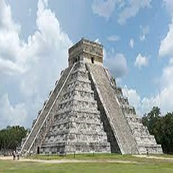
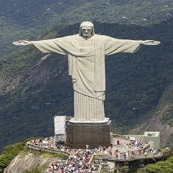
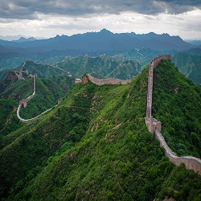
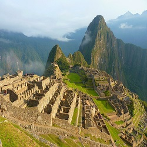
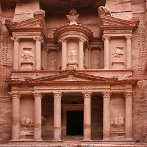
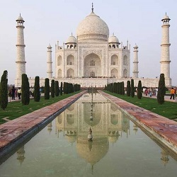
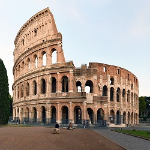

#1

Chichen Itza was a large pre-Columbian city built by the Maya people of the
Terminal
Classic period. The archeological site is located in Tinúm Municipality, Yucatán State, Mexico.[1]
Chichen Itza was a major focal point in the Northern Maya Lowlands from the Late Classic (c. AD 600–900) through
the Terminal Classic (c. AD 800–900) and into the early portion of the Postclassic period (c. AD 900–1200). The
site exhibits a multitude of architectural styles, reminiscent of styles seen in central Mexico and of the Puuc
and Chenes styles of the Northern Maya lowlands.
#2

Christ the Redeemer (Portuguese: Cristo Redentor, standard Brazilian
Portuguese:
[ˈkɾistu ʁedẽˈtoʁ], local pronunciation: [ˈkɾiɕtŭ̥ xe̞dẽˈtoɦ]) is an Art Deco statue of Jesus Christ in Rio de
Janeiro, Brazil, created by French sculptor Paul Landowski and built by Brazilian engineer Heitor da Silva
Costa, in collaboration with French engineer Albert Caquot. Romanian sculptor Gheorghe Leonida fashioned the
face. Constructed between 1922 and 1931, the statue is 30 metres (98 ft) high, excluding its 8-metre (26 ft)
pedestal. The arms stretch 28 metres (92 ft) wide[1][2].
#3

The Great Wall of China (traditional Chinese: 萬里長城; simplified Chinese: 万里长城;
pinyin:
Wànlǐ Chángchéng) is a series of fortifications that were built across the historical northern borders of
ancient Chinese states and Imperial China as protection against various nomadic groups from the Eurasian Steppe.
Several walls were built from as early as the 7th century BC,[4] with selective stretches later joined together
by Qin Shi Huang (220–206 BC), the first emperor of China. Little of the Qin wall remains.[5] Later on, many
successive dynasties built and maintained multiple stretches of border walls.
#4

Machu Picchu is a 15th-century Inca citadel located in the Eastern Cordillera
of
southern Peru on a 2,430-meter (7,970 ft) mountain ridge.[2][3] It is located in the Machupicchu District within
Urubamba Province[4] above the Sacred Valley, which is 80 kilometers (50 mi) northwest of Cusco. The Urubamba
River flows past it, cutting through the Cordillera and creating a canyon with a tropical mountain climate.[5]
#5

Petra (Arabic: ٱلْبَتْرَا, romanized: Al-Batrāʾ; Ancient Greek: Πέτρα, "Rock",
Nabataean:, originally known to its inhabitants as Raqmu or Raqēmō[3][4] is a historic and
archaeological city in southern Jordan. It is adjacent to the mountain of Jabal Al-Madbah, in a basin surrounded
by mountains forming the eastern flank of the Arabah valley running from the Dead Sea to the Gulf of Aqaba.[5]
The area around Petra has been inhabited from as early as 7000 BC,[6] and the Nabataeans might have settled in
what would become the capital city of their kingdom as early as the 4th century BC.
#6

The Taj Mahal is an Islamic ivory-white marble mausoleum on the right bank of
the river
Yamuna in the Indian city of Agra. It was commissioned in 1632 by the Mughal emperor Shah Jahan (r. 1628–1658)
to house the tomb of his favourite wife, Mumtaz Mahal; it also houses the tomb of Shah Jahan himself. The tomb
is the centrepiece of a 17-hectare (42-acre) complex, which includes a mosque and a guest house, and is set in
formal gardens bounded on three sides by a crenellated wall.
#7

The Colosseum is an oval
amphitheatre in the centre of the city of Rome, Italy, just east of the Roman Forum. It is the largest ancient
amphitheatre ever built, and is still the largest standing amphitheatre in the world today, despite its age.
Construction began under the emperor Vespasian (r. 69–79 AD) in 72[1] and was completed in 80 AD under his
successor and heir, Titus (r. 79–81).[2] Further modifications were made during the reign of Domitian (r.
81–96).[3] The three emperors that were patrons of the work are known as the Flavian dynasty, and the
amphitheatre was named the Flavian Amphitheatre.